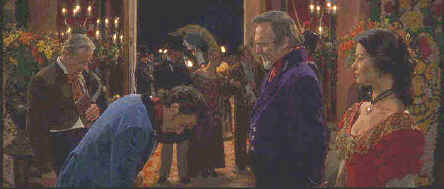

Columbia/1998/137m/ANA 2.35
While neither Antonio Banderas nor Anthony Hopkins may possess the same screen magnetism of Tyrone Power (Who starred as the masked dandy in a classic black and white Mark of Zorro.), The Mask of Zorro has two stars to one for The Mark of Zorro. Each of them capture aspects of the Zorro character, making them a formidable duo. Hopkins exudes sophistication as the older Zorro and there is no denying the fire and sex appeal of Latin actor Banderas.
 |
Introducing the new Zorro. ©Columbia |
Martin Campbell proves again that he can put
together a beautiful looking production, making the most out of his filmmaking team. With The
Mask of Zorro, Campbell is blessed with the best screenplay yet and that means a
terrific movie. The plot borrows heavily from earlier Zorros, but places its own stamp on
this new version with great aplomb. The added benefit of the mentor/student relationship
between Don Diego De la Vega (Hopkins) and Alejandro Murrieta (Banderas) serves to enhance
the structure of the film. Campbell’s efficiency in depicting the training sequences
is remarkable and he wisely breaks it up with the wild ride into the soldiers’
barracks before putting the finishing touches on the new Zorro.
A small interesting cheat is at the opening when we look through
the burlap mask we see the eyes of Antonio Banderas, but it cuts inside the tower, the
eyes belong to a young boy. It’s a quick clue that the boy will grow up to be the new
Zorro. The romp that follows as Zorro frees the prisoners about to perform a gallows
ballet provides a rousing opening platform. The image of Zorro riding up the steps of the
governor’s castle silhouetted against the sky is a terrific finish to the scene and
but the first of many other memorable touches.
Planted delightfully between Hopkins and Banderas is Catherine
Zeta-Jones as Elena. Playing Hopkins’ daughter and Banderas’ desired, she is
simply a staggering screen beauty. With classic features and a ravishing figure, the young
actress possesses a combination of spunk and sex appeal that is most unusual. Delightful
sparks flare between Banderas and Zeta-Jones. Stuart Wilson gives great heavy as Don
Rafael Montero, and Matt Letscher adds a perverse touch as henchman Captain Love.
The visual detail on thinks DVD is delivered with unparalleled
brilliance. Just like the magic of Zorro’s sword, someone in the back room has worked
magic on the transfer to DVD. Testing the limits of the NTSC system, a segment like the
edgy mine set, often breaks up into a series of jagged lines jumping all over the screen.
Not so here. The structure of the mine is rock solid. Most scenes are transferred with
reference precision. Take the return of Montero to California as an instance. Crowd detail
is defined to perfection. Colors stand out beautifully against sky and water. Check out
the multi-colored banners of the welcoming arch. The small patch of red on the sleeves of
the soldiers’ uniforms stands out with unusual definition and clarity. Examine the
range extreme sharpness in rendering the scene from the crowd to the water to the small
promontory. In the dance sequence at the hacienda check out the fine gradations of black
on the frock coats of the caballeros.
The Dolby Digital 5:1 surround sound is very aggressive. Sword
swipes pan across the theater space. Explosions erupt with divine impact. Dialogue is
enunciated with crisply. My one reservation about the DVD is that the audio is transferred
4-5 dB high. Otherwise, The Mask of Zorro joins the ranks of great reference DVDs.
The DVD comes with a nice multi-page booklet and there is a promotional short included as
well as a couple of stills that purport to be a "Photo Gallery."